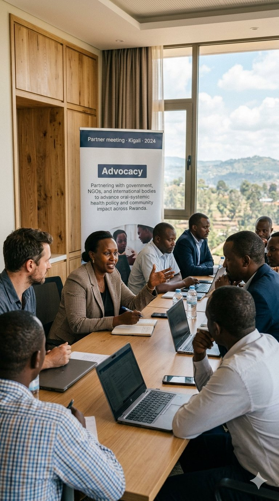
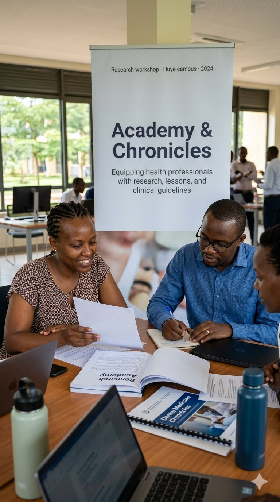
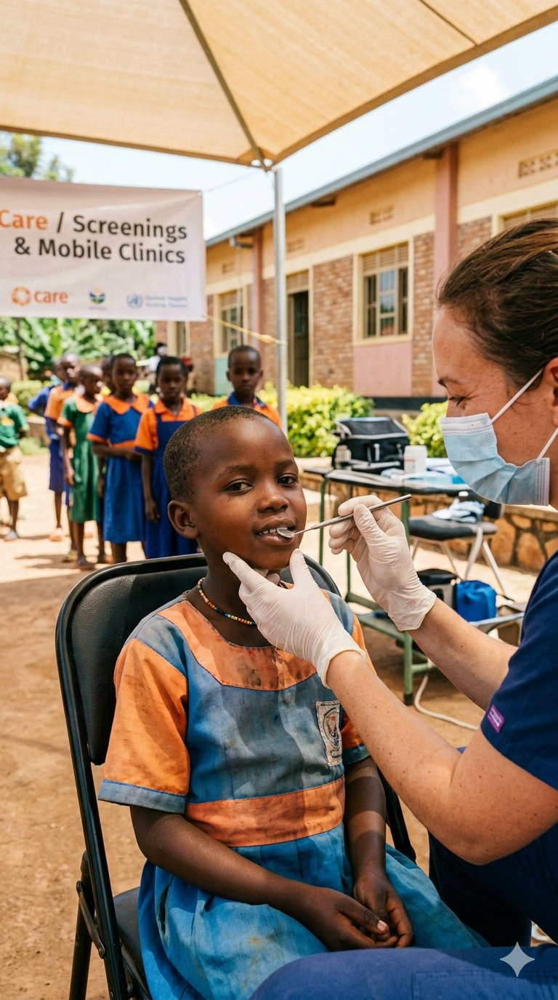
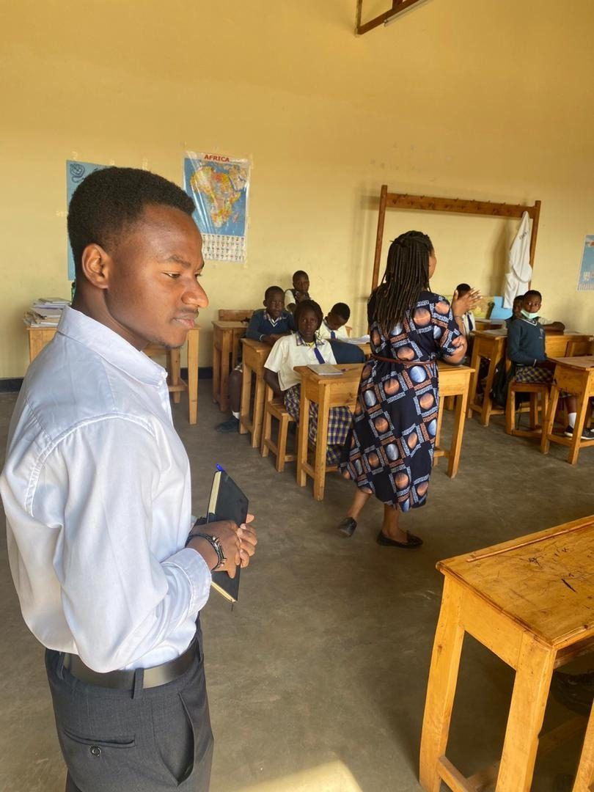
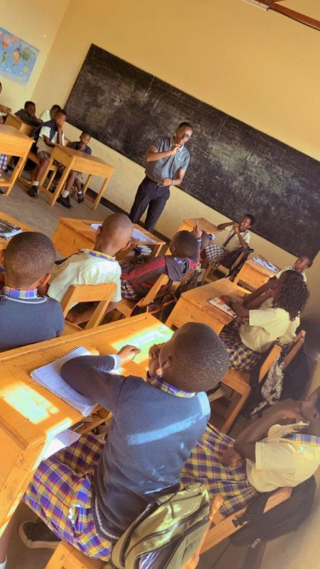

CEO & Founder
Igisubizo Jimmy Confiance
Dental professional and public health advocate committed to transforming oral healthcare access across Rwanda. Founder and driving force behind RDMS since its establishment in 2024.
Dento-Medical Society Rwanda Non-Profit Health Society Est. 2024
RDMS unites dental surgeons, dental therapists, medical doctors, and public health professionals to deliver integrated care, research, and policy advocacy across Rwanda. Free to communities. Member-supported.
Our Story
In Rwanda, oral health has long existed at the margins of the national healthcare system: underfunded, underrepresented, and often invisible to the communities that need it most. Dental disease, though largely preventable, continues to affect children, adults, and vulnerable populations who lack access to even the most basic oral care.
RDMS was founded to confront this reality. Driven by the belief that oral health is inseparable from general health, we bridge dentistry and medicine, professionals and students, urban centres and rural districts. We operate from Huye and reach communities across Rwanda through field programs, research, education, and policy engagement.
Since 1 July 2024 · Ngoma, Huye

Our Mission
To unite dental surgeons, dental therapists, and public health professionals in advancing oral-systemic health through collaborative education, research, outreach, and policy advocacy.
RDMS Mission · 2024
What Guides Us
We operate openly: governance, finance, research, and community engagement. Trust is the foundation of everything we do.
Progress in oral health requires collective effort. We unite professionals across disciplines, institutions, and borders.
Our work is driven by genuine care for the communities we serve. Patients and populations sit at the heart of every decision we make.
Quality oral healthcare is a right, not a privilege. Geography, income, or background should never determine the care someone receives.
We uphold the dignity of every person we serve, and recognise the deep link between human and environmental health.
Leadership
Dedicated dental and medical professionals leading RDMS’s mission across Rwanda.
CEO & Founder
Dental professional and public health advocate committed to transforming oral healthcare access across Rwanda. Founder and driving force behind RDMS since its establishment in 2024.
General Secretary
Medicine
VP of Finance
Medicine
VP of External Affairs
Dental Surgeon
VP of Internal Affairs
Dental Surgeon



How We Work
Three reinforcing commitments. Each one runs across Rwanda.
What We Do
From classrooms and rural districts to research desks and clinical fieldwork, RDMS delivers integrated oral health services that meet communities where they already are.

01 Field Service
Systematic dental screenings at primary and secondary schools across Rwanda. Teams arrive with portable equipment, assess students, identify untreated caries and developmental issues, and connect families with local follow-up care. Visits include on-the-spot oral hygiene education for students and teachers, making schools a frontline of prevention.

02 Education
Daily oral health messaging, fluoride application sessions, hygiene kit distribution, and community workshops on brushing, diet, and dental habits. Designed for schools, health centres, and community groups, with content tailored to both children and adults.
03 Research
Cross-sectional studies on disease prevalence, care access, and health behaviours across Rwanda. RDMS partners with academic institutions, hospitals, and international research bodies to build the evidence base for oral-systemic health policy reform.

04 Outreach
Mobile dental units deployed into underserved rural and peri-urban communities. Free examinations, extractions, fluoride treatment, and oral hygiene supplies, delivered directly to people who might otherwise never see a dentist.
Our Work
Active programs, recently completed work, and what's coming next. Tracked monthly, dated honestly, no roadmap fiction.
Research
A cross-sectional research study documenting the prevalence of dental conditions and their systemic health correlations in Rwandan adults.
Preventive Care
Automated daily preventive care messages distributed to community members via SMS and social media platforms.
Screenings
Systematic oral health screenings across 7 primary schools in Huye District, identifying untreated caries and periodontal conditions.
Awareness
Community awareness event raising support for individuals and families affected by Ectodermal Dysplasia in Rwanda and beyond.
Outreach
Mobile dental unit providing free extractions, fluoride treatment, and oral hygiene kits to communities in underserved areas.
Training
Training workshops for dental and medical professionals on integrating oral and systemic health in patient care.
RDMS Research Academy
A continuous-publication platform for clinical case studies, public-health surveys, and applied dental research from Rwandan dental and medical professionals. Evidence built where it’s needed, by the people who practice there.
Public Health Cross-sectional survey · Rwanda · January 2026
A community survey examining awareness of dental hygiene practices, barriers to dental visits, and the role of community health workers in shaping oral health behaviours across Rwandan districts.
Oral-Systemic Health
Emerging data highlights bidirectional associations between periodontitis and glycaemic control, with implications for integrated care pathways.
Preventive Dentistry
Synthesizes evidence on fluoride varnish application frequency and effectiveness against early childhood caries in low-resource settings.
Ectodermal Dysplasia
A practical clinical guide for Rwandan dental professionals managing patients with hypohidrotic ectodermal dysplasia, including prosthetic and implant considerations.
Oral Oncology
Reviewing current screening methods and community-based detection strategies feasible in Rwanda’s primary healthcare system.
Dental Materials
Comparing durability, patient outcomes, and cost-effectiveness of two restorative materials commonly available in Rwandan dental clinics.
Frequently Asked
Programs, partnerships, services, oral health basics. Still have a question? Write to us.
Get In Touch
We’re glad to hear from anyone considering funding a deployment, partnering with us, joining the society, or bringing a clinical question to the team.
Notes addressed to the leadership team are read directly. We try to reply within five working days; partnership proposals and clinical referrals get faster turnaround.
You can write through the form, send an email, or call. We are based in Huye, Southern Province, and answer in English, Kinyarwanda, or French.
Igisubizo Jimmy Confiance
Founder & CEO, RDMS · Huye, Rwanda